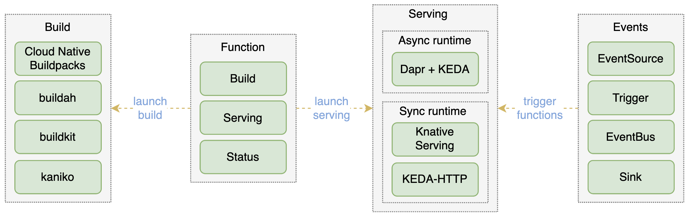

+++
title = "OpenFunction"
linkTitle = "OpenFunction"
+++
{{< blocks/cover title="" image_anchor="top" height="full" color="white" >}}
}}">
Documentation
GitHub
OpenFunction is a cloud-native open-source FaaS (Function as a Service) platform aiming to let you focus on your business logic without having to maintain the underlying runtime environment and infrastructure. You can concentrate on developing business-related source code in the form of functions.
{{< blocks/link-down color="info" >}}
{{< /blocks/cover >}}
{{% blocks/section color="white" %}}

OpenFunction Features
- Cloud-native and open-source
- Automatically build code into OCI-compliant images
- Automatically deploy application with dynamic scaling capabilities
- Provide events framework to make functions event-driven
- Provide function version control and ingress traffic management capabilities
Custom Resource Definitions
The core functionality of OpenFunction enables you to develop, run, and manage business applications with functions acting as execution units. Thus, OpenFunction implements the following custom resource definitions.
{{% /blocks/lead %}}
{{% blocks/section color="secondary" %}}
{{% blocks/feature icon="fa-lightbulb" title="Function" %}}
Function is a resource that you can define and manage according to your needs. It describes your applications, including what raw materials (source code) are used to make an artifact (application image) and the way it works (workload, runtime).
In OpenFunction, the Function resource controls the coordination between Builder and Serving in an orderly manner based on your configurations to implement the lifecycle management of your functions.
See [Function]({{[}}) for more information.
{{% /blocks/feature %}}
{{% blocks/feature icon="fa-lightbulb" title="Builder" %}}
Builder defines the build process in OpenFunction for generating application images from source code.
Currently, OpenFunction Builder uses Shipwright and Cloud Native Buildpacks to build application images. It uses Shipwright to control the process of building application images, including acquiring code, generating image artifacts, and publishing images through Cloud Native Buildpacks.
See [Builder]({{][}}) for more information.
{{% /blocks/feature %}}
{{% blocks/feature icon="fa-lightbulb" title="Serving" %}}
Serving aims to run applications in a highly elastic way (dynamic scaling: 0 <-> N).
Currently, OpenFunction Serving supports two kinds of workload runtimes: Knative and OpenFuncAsync. You need to configure a runtime to ensure that Serving works properly.
See [Serving]({{][}}) for more information.
{{% /blocks/feature %}}
{{% /blocks/section %}}
{{% blocks/lead color="orange" %}}
After you install OpenFunction,
refer to [OpenFunction samples](https://github.com/OpenFunction/samples) to run a sample function.
{{% /blocks/lead %}}
{{% blocks/lead color="primary" icon="fab fa-github" title="" url="https://github.com/OpenFunction/OpenFunction" %}}
]Contributions Welcome!
New contributors are always welcome!
Find us on [GitHub ](https://github.com/OpenFunction/OpenFunction) and create a [pull request](https://github.com/OpenFunction/OpenFunction/pulls).
{{% /blocks/lead %}}